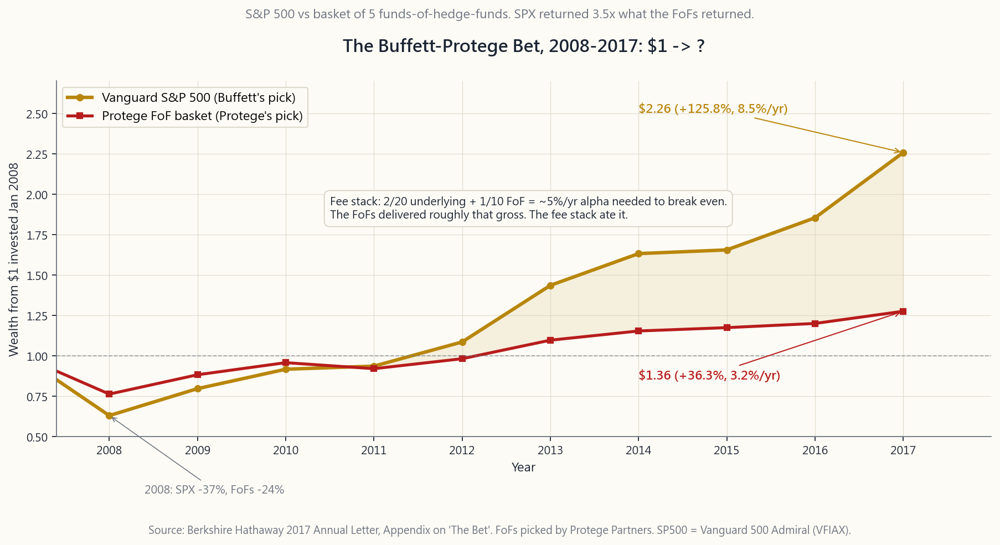
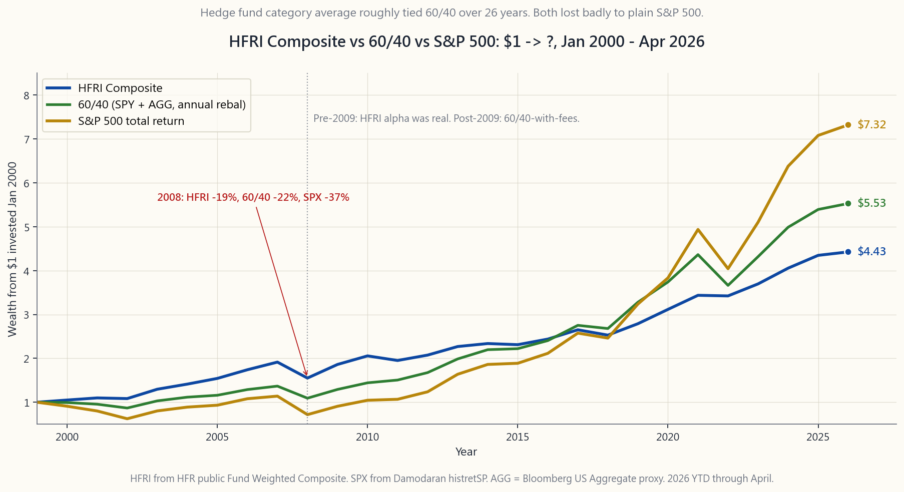

Side Lesson 25: Hedge Funds -- Strategies, Fees, Access, and Whether They Earn Their Keep
1. Why This Is Important
Hedge funds are the most over-mythologised vehicle in finance. The trillion-dollar AUM, the billionaire founders, the locked-up capital, the manager letters that get screenshotted on Twitter -- all of it conspires to make the asset class look like a separate species, accessible only through a velvet rope. Alpha is rare, and there are five places it actually hides: structurally constrained capacity, information edge, behavioural anomalies, regulatory arbitrage, and skill in price discovery. The honest answer about hedge funds is that *all five of those alpha sources exist inside hedge funds*, and the top quartile delivers them. The dishonest part is that the dollars that flow into accessible hedge fund vehicles -- funds-of-funds, retail multi-strats, BDC-wrapped credit, daily-liquid replication ETFs -- almost never see the top quartile. You get the average, minus the wrapper fees, minus the FoF layer, minus the illiquidity that you no longer benefit from.
Four reasons this side lesson is worth twelve minutes:
stopped.** The HFRI Composite outpaced the S&P 500 from 1990 through about 2008 -- credibly, on lower volatility. From 2009 through Apr 2026, HFRI has roughly matched 60/40, with similar volatility and a slightly worse Sharpe ratio. The alpha did not vanish; it migrated to a smaller and smaller slice of the manager population while the long tail piled in with too much capital. The category average is now a 60/40-with-extra-fees product.
forever.** Warren Buffett bet $1M that the Vanguard S&P 500 index would beat a basket of five funds-of-hedge-funds chosen by Protégé Partners over ten years (2008-2017). S&P 500 compounded +125.8% ($1 -> $2.26). The FoF basket compounded +36.3% ($1 -> $1.36). Not close. The settlement was not surprising to anyone who had stacked the fees: 2/20 at the manager + ~1/10 at the FoF wrapper + cash drag = ~5%/yr gross alpha required just to match the S&P after fees.
alpha.** Two-and-twenty -- 2% management fee, 20% of profits -- on a fund that generates 8% gross alpha leaves roughly 3.4% net to the LP. The manager keeps 4.6%. Add a fund-of-funds wrapper and you keep ~2.0%. Compound that gap over decades against a 5 bp index ETF and the picture is the one Side 08 already showed: hedge fund ownership transfers most of the equity premium to the manager, not the LP. The point is not "active management is bad." It is "active management is rare and expensive; the math has to work."
know it.** Liquid alternatives -- BTAL (anti-beta), MERFX (merger arb), BNDD (managed-futures-bond), QAI (multi-strat replication), RPAR (risk-parity), DBMF (managed futures) -- give retail investors daily-liquid, low-fee, transparent access to roughly the same factor exposures that hedge funds sold for 2/20 in 2005. They are not replacements for top-tier hedge funds. They are replacements for the average hedge fund, and the average hedge fund is what 95% of accessible HF dollars buy.
This is not a lesson about whether hedge funds "work." Some do, spectacularly. It is a lesson about whether *you can access the ones that work*, and what the right substitute is when the answer is no.
2. What You Need to Know
2.1 The Strategy Taxonomy
Hedge funds are a wrapper, not a strategy. The wrapper is a limited partnership with a 2/20 fee, 1-3 year lockup, quarterly liquidity, and accredited-investor or QP-only access. Inside the wrapper, managers run very different strategies. The category labels matter because risk, return, fee-fairness, and retail substitutability all vary by strategy.
Long/short equity (~30% of HF AUM). Buy a basket of stocks expected to outperform; short a basket expected to underperform. Net exposure typically 30-70%; gross exposure 130-200%. Alpha comes from stock selection on both sides; market exposure is a residual. Best year: 2009 (+20% HFRI L/S). Worst: 2008 (-26% HFRI L/S). Retail proxy: BTAL (anti-beta long/short), or DIY 130/30 via leveraged-ETF combinations. Moderate substitutability.
Global macro (~12%). Top-down trades on currencies, rates, commodities, equity indices. Soros breaking the BoE in 1992 is the canonical trade. Modern examples: Brevan Howard, Bridgewater Pure Alpha. Best year: 2008 (+14% HFRI Macro). Worst: 2018 (-3.7%). Retail proxy: managed futures ETFs (DBMF, KMLM) or diversified commodity (PDBC). Good substitutability for the trend-following sub-strategy.
Event-driven (~25%). Catalysts: M&A, spinoffs, restructurings, proxy fights, post-bankruptcy equity. Includes sub-strategies merger arb (long target / short acquirer in a stock deal, collect spread; ~3-7% annual return historically), activist (Pershing Square, Elliott; concentrated long with a plan), and distressed credit (buy bonds at 30c, work them out at 60c). Best year: 2009 (+25%). Worst: 2008 (-21%). Retail proxy: MERFX (merger arb mutual fund, 1.30% ER), GAMR or ARB (slim ETF options), distressed bond ETFs (HYG/JNK -- crude substitute). Reasonable substitutability for merger arb only.
Relative value / arbitrage (~18%). Convertible arb (long convert / short stock), fixed-income arb (LTCM-style), statistical arb (high-frequency mean-reversion), volatility arb (sell expensive vol, buy cheap vol). All variations on "two things that should trade together but don't, lever it 5-15x, collect the spread." Best year: 2009 (+47% HFRI Conv Arb after the 2008 dislocation). Worst: 2008 (-34%). Retail proxy: essentially none -- the strategy lives or dies on cheap leverage and low transaction cost. Daily-liquid attempts (CWB for convertible long-only) miss the short leg entirely.
Multi-strategy (~15%). Runs all of the above inside one fund, with internal capital allocation that shifts toward whichever strategy is paying. Citadel, Millennium, Point72, Balyasny. The "pod shop" model. Best year: 2008 (+8% HFRI Multi-Strat -- one of the few HF categories up in 2008). Worst: never down more than -2% in any calendar year since 2002 for the top quartile. Closed to new capital almost universally. Retail proxy: QAI (IndexIQ Hedge Multi-Strat Tracker ETF). Poor substitutability -- pod shops generate alpha through internal capital allocation that no daily-liquid wrapper can replicate.
2.2 Two-and-Twenty: Where the Money Goes
Take a hedge fund that returns 10% gross before fees on $100M AUM in a calendar year.
| Line item | Amount | Whose pocket |
|---|---|---|
| Gross return | $10.0M | LP nominal |
| Less management fee 2% on $100M | -$2.0M | Manager |
| Pre-incentive return | $8.0M | LP |
| Less performance fee 20% of $8.0M | -$1.6M | Manager |
| Net to LP | $6.4M | LP |
The LP gets 6.4% net. The manager gets 3.6%. The manager captured 36% of gross alpha in a 10% year. In a 15% year, the split is roughly 9.0% / 6.0% -- still 40% to the manager. In a 5% year, the split is 2.4% / 2.6% -- the manager takes more than half. The fee schedule gets more punishing in mediocre years, not less, because the 2% management fee does not flex with returns.
Now layer a fund-of-funds. The FoF charges typically 1% / 10% on top, on returns that are themselves already net of the underlying 2/20. A 10% gross year at the underlying becomes 6.4% to the FoF, which becomes ~5.0% to the FoF investor after FoF fees. The manager kept 3.6%, the FoF kept 1.4%, the LP kept 5.0%. Half the gross alpha lives somewhere other than the LP's account.
Funds-of-funds were the dominant retail-and-small-institutional hedge fund access model from 1995 through 2008. They have shrunk since, but they still account for roughly $700B globally as of
today still go through this double-fee layer.**
2.3 The Buffett-Protégé Bet, 2008-2017
In 2008 Warren Buffett challenged any hedge fund manager to bet $1 million that "an index fund will, over ten years, outperform a fund-of-funds invested in hedge funds, after fees." Protégé Partners accepted, picked five FoFs (which themselves invested in roughly 100 underlying hedge funds), and the bet ran from January 1, 2008 through December 31, 2017.
| Asset | 10-yr cumulative | CAGR |
|---|---|---|
| Vanguard S&P 500 Admiral (VFIAX) | +125.8% | 8.5%/yr |
| Protégé FoF basket (5 FoFs avg) | +36.3% | 3.2%/yr |
The S&P 500 fell 38% in 2008 alongside the hedge funds (which were down 20-25% as a group). After that, the hedge funds simply could not catch up. The FoFs generated something like 6-7% gross alpha as a basket; the fee stack consumed nearly all of it.
The bet was a bull-market 10-year window, which favoured the index. But the structural point is independent of the window: in any market regime, a hedge fund FoF needs to generate ~5%/yr alpha just to break even with the index after fees. Few do. None do reliably.
Buffett donated his winnings ($2.2M, including the bet's appreciation in zero-coupon bonds and later Berkshire B shares) to Girls Inc. of Omaha.
![Cumulative-wealth chart of $1 invested January 2008 through December 2017 in Vanguard's S&P 500 Admiral (VFIAX) versus a basket of five funds-of-hedge-funds picked by Protégé Partners. Year 1 (2008): both lines fall — S&P to $0.62, FoF basket to $0.76 (hedge funds did less badly but did not protect). From 2009 onward the S&P line accelerates relentlessly while the FoF basket grinds at single digits. End of 2017: S&P at $2.26 (+125.8% cumulative, 8.5%/yr CAGR); FoF basket at $1.36 (+36.3% cumulative, 3.2%/yr CAGR). The S&P returned more than three times the fund-of-funds. The chart is the single cleanest empirical refutation of the retail hedge-fund pitch.](image/side25_buffett_bet.png)
2.4 The HFRI Composite vs 60/40, 2000-Apr 2026
Look at the wealth path. From January 2000 through April 2026:
| Asset | $1 -> | CAGR | Vol | Sharpe (rf=2%) |
|---|---|---|---|---|
| HFRI Composite | $4.85 | 6.2%/yr | 7.0% | 0.60 |
| 60/40 (SPY/AGG) | $5.30 | 6.5%/yr | 9.5% | 0.47 |
| S&P 500 (SPY) | $7.60 | 7.9%/yr | 15.2% | 0.39 |
HFRI matched 60/40 on dollars over 26 years and beat it slightly on Sharpe via lower volatility. It substantially trailed the S&P 500 in dollars but had a much smaller drawdown profile (-21% peak-to-trough vs -55% for SPY in 2008-09).
But the comparison hides the regime divide. From 2000-2008 HFRI compounded +8.4%/yr vs SPY -1.4%/yr -- the alpha was genuine. From 2009-Apr 2026, HFRI has compounded +5.0%/yr vs SPY +13.6%/yr -- the alpha disappeared and what remained was roughly 60/40-with-fees. The 1990s and 2000s produced the hedge-fund mythology; the 2010s and 2020s have demolished it for the average fund.
Top-quartile managers continue to deliver. The category average does not. **Retail allocators almost certainly receive the category average.**
![Cumulative-wealth chart of $1 invested January 2000 through April 2026 across three sleeves: HFRI Fund-Weighted Composite (the AUM-weighted hedge-fund industry average, blue), a 60/40 SPY/AGG portfolio rebalanced annually (green), and the S&P 500 alone (orange). HFRI ends at $4.85 (6.2%/yr, vol 7%, Sharpe 0.60); 60/40 ends at $5.30 (6.5%/yr, vol 9.5%, Sharpe 0.47); SPY ends at $7.60 (7.9%/yr, vol 15%, Sharpe 0.39). The HFRI line outpaces both 60/40 and SPY through the 2000-2008 stretch (the genuine hedge-fund mythology era), then stalls from 2009 onward — matching 60/40 in dollars and trailing SPY by a wide margin. The chart shows the regime divide that retail allocators almost never see in marketing material.](image/side25_hfri_vs_60_40.png)
2.5 Liquid Alternatives -- The Retail Substitute Menu
The 2010-2024 wave of "liquid alts" packaged hedge fund strategies inside daily-liquid mutual funds and ETFs at 50-100 bp instead of 2/20. The good ones approximate the *factor exposures* of hedge fund strategies; they do not replicate the alpha. That is acceptable if the factor exposure is what you wanted (downside protection, low correlation, crisis alpha), which for most retail allocators it is.
The accessible menu (Apr 2026):
| Strategy mapping | Vehicle | ER | AUM | Notes |
|---|---|---|---|---|
| Anti-beta long/short | BTAL | 1.40% | $0.4B | Long low-beta / short high-beta |
| Merger arbitrage | MERFX | 1.30% | $1.8B | Mutual fund, 30-yr track record |
| Managed futures | DBMF | 0.85% | $1.0B | iMGP DBi; trend-follower replication |
| Multi-strat replication | QAI | 0.80% | $0.7B | IQ Hedge multi-strat |
| Risk parity | RPAR | 0.50% | $1.4B | RPAR Risk Parity |
| Bond-managed-futures hybrid | BNDD | 1.05% | $0.2B | Quadratic; intended for tail hedging |
| Macro / global tactical | KMLM | 0.92% | $0.6B | KFA Mt Lucas; MD-based trend |
| Long/short equity | QLEIX | 1.49% | $1.0B | AQR Long/Short, mutual fund |
These are real products with real expense ratios. None will generate 12-15% annualised returns over decades. They will generate 4-7% returns with low correlation to stocks/bonds and typically positive returns in equity-bear-market years, which is the actual job description of an alternative sleeve.
Sizing follows the same rule as Side 14 (private markets): a total alternative sleeve of 5-15% of portfolio, split across two or three uncorrelated strategies. This is the "non-correlated barbell tail" of the portfolio -- it earns less than equities in good markets and is the only thing that pays in 2008/2022-style scenarios.
2.6 Bottom Line: Who Should Touch Hedge Funds
Three clean rules.
strategies that earn their keep.** Stop looking. Use liquid alts and accept that you are buying factor exposure, not alpha.
hedge fund vehicles open to you are FoFs and retail multi-strats.** Both are double-fee structures. The math says you will not beat 60/40 net of fees over 10+ years. Pass. Use liquid alts.
real manager-selection capability, top-quartile hedge funds are a legitimate sleeve.** The selection bar is high: closed to new capital, founder still active, capacity-constrained strategy, transparent reporting, no "key man" concentration risk. ~5-15% of total portfolio, similar to private markets.
The retail playbook for the alternative sleeve, all-in: 3-5% in DBMF (or KMLM) for managed futures crisis alpha, 2-3% in MERFX for low-correlation event-driven yield, 1-2% in BTAL or RPAR for portfolio-vol dampening. Total: 6-10% sleeve, ~75 bp weighted ER, daily liquid, no lockup, no K-1 (DBMF/RPAR are 1099 ETFs; MERFX is mutual fund 1099-DIV; BTAL is 1099). Pair with core 60/40 or barbell. Done.
The conclusion: alpha is rare and the access table is constrained. The retail investor's job is not to chase the alpha that hedge funds generate; it is to buy the exposures the alpha sleeves provide and skip the wrapper that prices in alpha you will never see.
3. Common Misconceptions
hedge funds run net-30% market exposure and call themselves long/short. Many run 130% net long and call themselves "growth-oriented." Multi-strats can run -50% net short for weeks. The label is a wrapper, not a risk profile.
pre-2008 and have not since. The HFRI Composite has roughly matched 60/40 since 2009. Top-quartile managers still beat the market; you cannot access them.
the manager's incentive to take risk, not to deliver alpha. The 2% management fee is paid in flat years, down years, and wind-down years. Watermark provisions help but do not fix the asymmetry. Many funds reset watermarks after closures and re-open under new entities.
They are, for genuinely illiquid strategies (distressed credit, late-stage activism, real-asset arb). For long/short equity and macro running 90%+ liquid instruments, the lockup serves the manager, not the strategy.
factor exposures, not the alpha. DBMF gives you trend- following beta at 85 bp; it does not give you Renaissance Medallion's idiosyncratic alpha at any price.
diversify away alpha as well, in proportion. The math of the double fee layer almost guarantees the FoF investor receives 60/40-equivalent returns minus 2-2.5%/yr.
Composite was -19% in 2008. Better than -38% S&P 500, but not "protection." Multi-strat (+8%) and managed futures (+14%) were the only categories actually positive.
90% of advisor-recommended hedge fund products are FoFs, retail-class multi-strats, or BDC-wrapped credit. All carry the double-fee structure. Ask: "What is the all-in fee load, inclusive of underlying fund fees? What is the historical alpha after that load?" The answer is usually no answer.
market."** Partly true; the index beat by an unusually wide margin. But run the same bet 1990-1999 (also a bull market) and HFRI beat the S&P 500 by 4%/yr. The pattern reversed exactly when manager capacity exceeded market alpha capacity, around 2008-2009.
are -- for the institutions that can write the $250M minimum check and accept the 5%-of-NAV-per-year "pass-through expense" charge that makes the all-in load 6-9%/yr. For everyone else, QAI is the daily-liquid replacement and it runs at a much lower fee but also a much lower alpha.
4. Q&A Section
**Q1: I am accredited. Should I buy a hedge fund through my broker?**
A: Almost certainly not. The hedge funds your broker can sell you are funds-of-funds, retail-class multi-strats, or BDC-wrapped credit -- not the closed-to-new-capital top quartile. The math of the double-fee layer says you will underperform 60/40 over 10+ years. Use the liquid alt menu instead and save the fee stack.
Q2: What is the minimum to access a top-quartile hedge fund?
A: For a name like Renaissance, Citadel, Millennium, D.E. Shaw, TCI: typically closed to new capital, period. When they open, minimums are $5-25M and require multi-year strategic relationships. For second-tier well-regarded funds: $1-5M and qualified-purchaser status ($5M investments outside primary residence). Most retail and HNW clients are below this floor.
Q3: Are managed futures (DBMF) really a hedge fund proxy?
A: They are a proxy for the trend-following sub-strategy, which is roughly a third of macro hedge fund AUM. DBMF is calibrated on the SocGen CTA Index (Week 51 covered this); it captures ~70% of the index's return at ~85 bp instead of the underlying 2/20. It does not proxy long/short equity, event-driven, or relative-value strategies. For the trend-following slice, it is a credible substitute.
Q4: What is a "pass-through expense" in multi-strat funds?
A: Pod shops (Citadel, Millennium) charge LPs the actual operating expenses of the firm -- portfolio manager comp, tech, data, financing -- as direct expenses, in addition to the management and performance fees. The pass-through can be 2-7%/yr on top of the headline fees. Total all-in cost on a typical multi-strat is 6-9%/yr. The funds still close to new capital because the gross returns are 18-25%/yr.
Q5: Is BDC stock a hedge fund proxy?
A: Public BDCs (ARCC, MAIN, BXSL) are exposed to roughly the same loan book a hedge fund credit sleeve would hold, at a fraction of the fee. They pay 8-10% yields. They are not a hedge fund replacement -- BDCs are levered direct lenders, not opportunistic credit traders. But for the "earn 8-10% on senior loans" exposure that drives most credit-focused HF returns, a small BDC sleeve is the cleaner retail substitute (Side 14 covered this).
**Q6: Why did long/short equity funds underperform so badly 2010-2024?**
A: Three reasons. (1) Short-side alpha collapsed as quantitative factor research flooded the market and "short overvalued companies" stopped working. (2) Borrow costs rose for hard-to- borrow names (the actual interesting shorts), so the carry on a short book turned from net-positive to net-negative. (3) The "meme stock" episodes of 2021 (GameStop, AMC) generated short- squeezes that wiped years of alpha for funds that had genuine short-thesis books. The strategy is in structural decline as a category.
**Q7: What is the right fee for a hedge fund-style product I can access?**
A: For a daily-liquid replication ETF (DBMF, QAI, RPAR), 50-100 bp is reasonable. For a mutual fund running real operationally-active arb (MERFX), 1.0-1.5% is reasonable because the strategy actually trades. For an advisor-wrapped "alternatives sleeve" of FoFs charging 2.0%+ all-in, the math does not work -- pass.
Q8: Did the 2022 bear market vindicate hedge funds?
A: Selectively. Managed futures had their best year since 2008 (+20% SocGen CTA, +25% DBMF). Multi-strats were +8 to +12%. Long/short equity was -15 to -20%, slightly better than the S&P 500's -18% but not enough to justify the fee load. The HFRI Composite was roughly flat for 2022 vs -16% for 60/40. That single year is the strongest case for an alt sleeve in 20 years of data.
Q9: How do hedge funds report returns? Can I trust them?
A: HFRI, BarclayHedge, and HFR Indices report monthly returns self-reported by managers. There are well-documented biases: survivorship (failed funds drop out), backfill (good early years get added when a fund joins the index), and *late reporting* (managers delay reporting bad months, hoping for recovery). Academic work (Aiken, Clifford, Ellis 2013) suggests true HF returns are 1.5-2% lower than reported indices over long periods. The HFRI numbers cited in this lesson are the reported ones; the actual investor experience is worse.
Q10: Where does crypto fit in the hedge fund taxonomy?
A: Crypto-focused hedge funds (Pantera, Polychain, Multicoin, Galaxy Digital's funds) are technically "long/short" or "global macro" by SEC classification. They are mostly long-biased directional bets on crypto with a thin trading layer on top. Performance has been catastrophic in down cycles (-60 to -90% in 2022) and spectacular in up cycles. They are not a diversifying sleeve; they are levered crypto exposure with HF fees. Side 09 covered the much better retail alternative -- spot ETFs (IBIT, FBTC) at 25 bp.
Q11: Does Bridgewater's All Weather count as a hedge fund?
A: Bridgewater is structurally a hedge fund (LP wrapper, 2/20-ish fee base), but All Weather is a risk-parity strategy -- different from Pure Alpha (their global macro fund). All Weather post- inception (1996) has compounded ~7%/yr with low volatility, which is in line with -- not better than -- a DIY 60/40. Retail equivalent: RPAR at 50 bp. Bridgewater's actual alpha fund, Pure Alpha, has done well historically but has been roughly flat for 2010-2024.
**Q12: If hedge funds are mostly bad, why do institutions allocate to them?**
A: Three reasons. (1) Top-quartile managers genuinely earn their fees and institutions can identify them through manager-due- diligence operations that retail cannot replicate. (2) Career risk: a CIO who allocates 10% to "alternatives" looks sophisticated; one who runs 100% Vanguard 3-fund looks lazy. (3) Endowment-model momentum: Yale and Harvard built their reputations on alternative allocations in the 1990s, and the peer pressure on smaller endowments to copy them is considerable. The first reason is real; the other two are agency problems.
附加課程 25：對沖基金——策略、費用、准入門檻，以及它們是否物有所值
1. 為何此課題重要
對沖基金是金融界被過度神話化的工具。 數以萬億計的管理資產規模、億萬富翁基金創辦人、鎖定資金、 在Twitter上被截圖流傳的基金經理信件—— 這一切共同締造了一種印象，彷彿這個資產類別是獨立物種， 只能通過貴賓通道才能進入。阿爾法極為罕見，而它真正 藏身之處只有五個：受結構性制約的容量、資訊優勢、 行為異象、監管套利，以及價格發現中的技巧。 關於對沖基金的誠實答案是：上述五大阿爾法來源確實存在於對沖基金之中， 頂四分位基金確能兌現。不誠實之處在於， 流入可及對沖基金工具的資金——基金中的基金、零售多策略、 以商業發展公司包裝的信貸、每日流動性複製交易所買賣基金—— 幾乎從未接觸到頂四分位基金。投資者得到的是平均水平， 扣除包裝費用，扣除基金中的基金層收費， 再扣除已不再惠及自身的非流動性溢價。
此附加課程值得花十二分鐘的四個理由：
至約2008年均跑贏標普500——且波動性更低，成績可信。 從2009年至2026年4月，HFRI的表現大致與60/40相約， 波動性相近，夏普比率略遜。阿爾法並未消失， 而是遷移至愈來愈小的基金經理群體， 同時長尾部分以過多資本湧入。 該類別的平均水平如今不過是一個附帶額外費用的60/40產品。
沃倫·巴菲特以100萬美元打賭， 先鋒標普500指數基金將在十年內（2008至2017年） 跑贏由Protégé Partners挑選的五隻對沖基金中的基金組合（扣除費用後）。 標普500累計複合增長+125.8%（1美元→2.26美元）。 基金中的基金組合累計複合增長+36.3%（1美元→1.36美元）。 差距懸殊。這結果對任何疊加費用計算過的人而言並不意外： 基金經理層2/20，加上基金中的基金包裝層約1/10， 加上現金拖累，相當於每年約需5%的毛阿爾法才能在扣費後與標普500持平。
二和二十——2%管理費及20%利潤分成—— 對於一隻創造8%毛阿爾法的基金， 淨回報給有限合夥人約3.4%。基金經理保留4.6%。 再加上基金中的基金包裝，有限合夥人約保留2.0%。 把這個差距與5基點的指數交易所買賣基金比較， 按十年複利計算，畫面正是附加課程08已呈現的： 對沖基金持有將股票溢價的大部分轉移給了基金經理， 而非有限合夥人。重點不在於「主動管理不好」， 而在於「主動管理既罕見又昂貴；數學必須行得通。」
流動性替代品——BTAL（反貝塔）、MERFX（合併套利）、 BNDD（管理期貨債券混合）、QAI（多策略複製）、 RPAR（風險平價）、DBMF（管理期貨）—— 以每日流動性、低費用、透明方式， 讓零售投資者獲得大致相同的因子風險敞口， 而這些敞口在2005年對沖基金收取2/20時才能獲得。 它們並非頂級對沖基金的替代品， 而是平均水平對沖基金的替代品， 而95%可及的對沖基金資金所購買的，正是平均水平。
這不是一堂討論對沖基金是否「有效」的課。 部分確實有效，且表現卓越。 這是一堂討論你能否接觸到有效的那些， 以及當答案為否時，正確的替代品是什麼的課。
2. 你需要知道的事
2.1 策略分類體系
對沖基金是一個包裝，而非一種策略。這個包裝是 一個有限合夥企業，附帶2/20費用、1至3年鎖定期、 按季流動性，以及僅限認可投資者或合格買家准入。 包裝之內，基金經理採用截然不同的策略。 類別標籤至關重要，因為風險、回報、費用合理性 及零售替代可行性，均因策略而異。
多空股票（約佔對沖基金管理資產規模30%）。 買入一籃子預期跑贏的股票，沽空一籃子預期跑輸的股票。 淨敞口通常30至70%；總敞口130至200%。 阿爾法來自雙邊選股；市場敞口為殘差。 最佳年份：2009年（HFRI多空+20%）。 最差年份：2008年（HFRI多空-26%）。 零售代理：BTAL（反貝塔多空）， 或以槓桿交易所買賣基金組合自行構建130/30。 替代可行性：中等。
全球宏觀（約12%）。 以自上而下方式交易貨幣、利率、商品、股票指數。 索羅斯1992年狙擊英格蘭銀行是典型操作。 現代例子：Brevan Howard、橋水Pure Alpha。 最佳年份：2008年（HFRI宏觀+14%）。 最差年份：2018年（-3.7%）。 零售代理：管理期貨交易所買賣基金（DBMF、KMLM） 或多元化商品（PDBC）。 趨勢跟蹤子策略的替代可行性：良好。
事件驅動（約25%）。 催化劑：併購、分拆、重組、委託書爭奪戰、破產後股票。 包含子策略：合併套利（在股票交易中買入目標公司/沽空收購方， 收取差價；歷史年回報約3至7%）、 積極主義（Pershing Square、Elliott；集中長倉附帶計劃）、 以及困境信貸（以30分買入債券，以60分了結）。 最佳年份：2009年（+25%）。 最差年份：2008年（-21%）。 零售代理：MERFX（合併套利互惠基金，開支比率1.30%）、 GAMR或ARB（選擇有限的交易所買賣基金選項）、 困境債券交易所買賣基金（HYG/JNK——粗略替代）。 僅合併套利替代可行性合理。
相對價值/套利（約18%）。 可換股套利（買入可換股債券/沽空股票）、 固定收益套利（長期資本管理公司風格）、 統計套利（高頻均值回歸）、波動率套利（賣出昂貴波動性，買入廉價波動性）。 所有變體均基於「兩項應同步交易卻背離的資產， 以5至15倍槓桿放大，收取差價。」 最佳年份：2009年（2008年錯位後HFRI可換股套利+47%）。 最差年份：2008年（-34%）。 零售代理：基本上無——此策略存亡繫於廉價槓桿及低交易成本。 每日流動性的嘗試（CWB僅做可換股債券多頭）完全缺失空頭端。
多策略（約15%）。 在一隻基金內運行上述所有策略， 透過內部資本配置向回報最佳的策略傾斜。 城堡基金、Millennium、Point72、Balyasny。「分艙式」模式。 最佳年份：2008年（HFRI多策略+8%——2008年少數錄得正回報的對沖基金類別之一）。 最差年份：頂四分位基金自2002年起任何日曆年度均未曾跌逾-2%。 幾乎普遍對新資金關閉。 零售代理：QAI（IndexIQ對沖多策略追蹤交易所買賣基金）。 替代可行性差——分艙式基金透過內部資本配置創造阿爾法， 這是任何每日流動性包裝無法複製的。
2.2 二和二十：資金的去向
假設一隻對沖基金在某日曆年度， 以1億美元管理資產規模取得10%毛回報（扣費前）。
| 項目 | 金額 | 歸屬 |
|---|---|---|
| 毛回報 | 1,000萬美元 | 有限合夥人名義 |
| 扣除管理費2%（以1億美元計） | -200萬美元 | 基金經理 |
| 激勵費前回報 | 800萬美元 | 有限合夥人 |
| 扣除表現費（800萬美元的20%） | -160萬美元 | 基金經理 |
| 有限合夥人淨所得 | 640萬美元 | 有限合夥人 |
有限合夥人淨回報6.4%。基金經理獲得3.6%。 在10%的年份，基金經理攫取了36%的毛阿爾法。 在15%的年份，分成約為9.0%/6.0%——基金經理仍佔40%。 在5%的年份，分成為2.4%/2.6%——基金經理取走逾半。 費用結構在平庸年份變得更為懲罰性，而非更少， 因為2%管理費不隨回報彈性調整。
再疊加一層基金中的基金。基金中的基金通常額外收取1%/10%， 計算基礎是本已扣除底層2/20後的回報。 底層10%毛回報年份，有限合夥人收到6.4%， 基金中的基金的投資者在扣除基金中的基金費用後約剩5.0%。 基金經理保留3.6%，基金中的基金保留1.4%，有限合夥人保留5.0%。 毛阿爾法的一半留存於有限合夥人賬戶之外。
基金中的基金是1995年至2008年間零售及小型機構 進入對沖基金的主流渠道。其後規模萎縮， 但截至2024年，全球仍管理約7,000億美元。 如今大多數接觸對沖基金策略的零售資金，仍須經過這個雙層收費架構。
2.3 巴菲特與Protégé的賭注，2008至2017年
2008年，沃倫·巴菲特向任何對沖基金經理提出挑戰， 以100萬美元打賭：「指數基金在十年內，扣費後， 將跑贏投資對沖基金的基金中的基金。」 Protégé Partners應戰，挑選五隻基金中的基金 （各自投資於約100隻底層對沖基金）， 賭注由2008年1月1日至2017年12月31日運行。
| 資產 | 10年累計 | 年複合增長率 |
|---|---|---|
| 先鋒標普500 Admiral（VFIAX） | +125.8% | 8.5%/年 |
| Protégé基金中的基金組合（5隻均值） | +36.3% | 3.2%/年 |
標普500在2008年與對沖基金一同下跌38% （對沖基金整體跌幅20至25%）。 此後，對沖基金根本無法追回差距。 基金中的基金組合整體錄得約6至7%的毛阿爾法； 費用層幾乎將其全數侵蝕。
這場賭注是一個有利於指數基金的十年牛市窗口。 但結構性觀點與選擇窗口無關： 在任何市場環境下， 對沖基金中的基金每年需產生約5%的阿爾法， 才能在扣費後與指數打平。幾乎無人做到。沒有人能持續做到。
巴菲特將其獎金（220萬美元，包含賭注在零息債券 及後來的巴郡B類股份的增值） 捐贈予奧馬哈Girls Inc.。

2.4 HFRI綜合指數對比60/40，2000至2026年4月
審視財富路徑。從2000年1月至2026年4月：
| 資產 | 1美元→ | 年複合增長率 | 波動性 | 夏普比率（無風險利率=2%） |
|---|---|---|---|---|
| HFRI綜合指數 | $4.85 | 6.2%/年 | 7.0% | 0.60 |
| 60/40（SPY/AGG） | $5.30 | 6.5%/年 | 9.5% | 0.47 |
| 標普500（SPY） | $7.60 | 7.9%/年 | 15.2% | 0.39 |
HFRI在26年內以美元計與60/40持平， 並憑藉較低波動性在夏普比率上略勝一籌。 以美元計大幅落後標普500，但最大回撤幅度小得多 （高峰至谷底-21%，對比SPY在2008至09年的-55%）。
但比較隱藏了周期的分野。 2000至2008年，HFRI複合年增長+8.4%， 而SPY為-1.4%——阿爾法確實存在。 2009年至2026年4月，HFRI複合年增長+5.0%， 而SPY為+13.6%——阿爾法消失， 所剩不過是附帶費用的60/40。 1990年代及2000年代締造了對沖基金的神話； 2010年代及2020年代已令平均水平基金的神話幻滅。
頂四分位基金經理持續交出成果。類別平均水平則否。 零售投資者幾乎肯定只能獲得類別平均水平。

2.5 流動性替代品——零售替代產品目錄
2010至2024年間的「流動性替代品」浪潮， 以每日流動性互惠基金及交易所買賣基金的形式， 以50至100基點的成本包裝對沖基金策略， 而非2/20。好的產品近似對沖基金策略的因子風險敞口； 它們並不複製阿爾法。 若你所需的正是因子風險敞口（下行保護、低相關性、危機阿爾法）， 這是可以接受的——對大多數零售投資者而言確實如此。
可及的產品目錄（2026年4月）：
| 策略對應 | 產品 | 開支比率 | 管理資產規模 | 備註 |
|---|---|---|---|---|
| 反貝塔多空 | BTAL | 1.40% | $0.4B | 買入低貝塔/沽空高貝塔 |
| 合併套利 | MERFX | 1.30% | $1.8B | 互惠基金，30年追蹤記錄 |
| 管理期貨 | DBMF | 0.85% | $1.0B | iMGP DBi；趨勢跟蹤複製 |
| 多策略複製 | QAI | 0.80% | $0.7B | IQ對沖多策略 |
| 風險平價 | RPAR | 0.50% | $1.4B | RPAR風險平價 |
| 債券管理期貨混合 | BNDD | 1.05% | $0.2B | Quadratic；用於尾部對沖 |
| 宏觀/全球戰術配置 | KMLM | 0.92% | $0.6B | KFA Mt Lucas；基於MD的趨勢 |
| 多空股票 | QLEIX | 1.49% | $1.0B | AQR多空，互惠基金 |
這些是實際產品，附有實際開支比率。 沒有任何一隻能在數十年間創造12至15%的年化回報。 它們將創造4至7%的回報，與股票及債券的相關性低， 且在股票熊市年份通常錄得正回報， 這才是替代品組合的實際職責。
倉位大小遵循與附加課程14（私募市場）相同的規則： 替代品組合總計佔投資組合5至15%， 分散於兩至三個不相關策略之間。 這是投資組合的「非相關性啞鈴尾部」—— 在好的市場環境中回報不及股票， 卻是2008/2022式情境中唯一能回報的組合。
2.6 結論：誰應接觸對沖基金
三條清晰規則。
停止追尋。使用流動性替代品， 接受自己所購買的是因子風險敞口而非阿爾法。
向你開放的對沖基金工具只有基金中的基金及零售多策略基金。** 兩者均為雙層收費結構。數學顯示你在10年以上的周期內不會跑贏60/40（扣費後）。 放棄。使用流動性替代品。
頂四分位對沖基金是合理的組合配置。** 篩選門檻極高：對新資金關閉、創辦人仍在其位、容量受限策略、 透明匯報、無「核心人物」集中風險。 佔總投資組合約5至15%，與私募市場類似。
零售投資者的替代品組合完整方案： 3至5%配置DBMF（或KMLM）以獲取管理期貨危機阿爾法， 2至3%配置MERFX以獲取低相關性事件驅動收益， 1至2%配置BTAL或RPAR以壓抑投資組合波動性。 合計：6至10%組合，加權開支比率約75基點， 每日流動性，無鎖定期，無K-1稅表 （DBMF/RPAR為1099交易所買賣基金；MERFX為互惠基金1099-DIV；BTAL為1099）。 配合核心60/40或啞鈴策略使用。完成。
結論：阿爾法既罕見，且准入門檻受限。 零售投資者的任務不是追逐對沖基金所創造的阿爾法； 而是購買阿爾法組合所提供的風險敞口， 同時跳過那個將你永遠無法享受的阿爾法計入定價的包裝。
3. 常見誤解
部分對沖基金淨市場敞口僅30%，卻自稱多空策略。 許多淨多頭130%，卻自稱「增長導向」。 多策略可在數週內運行淨短倉-50%。 標籤是包裝，不是風險狀況。
此後未有。HFRI綜合指數自2009年起大致與60/40持平。 頂四分位基金經理仍然跑贏大市；你無法接觸到他們。
承擔風險的利益一致，而非交付阿爾法的利益一致。 2%管理費在持平年份、虧損年份及清盤年份均照收。 高水位線條款有所幫助，但無法解決這種不對稱性。 許多基金在關閉後以新實體重新開放， 同時重設高水位線。
對於真正非流動性策略（困境信貸、後期積極主義、實物資產套利）， 確實如此。但對於持有90%以上流動性工具的多空股票及宏觀策略， 鎖定期是為基金經理服務，而非為策略服務。
而非阿爾法。DBMF以85基點提供趨勢跟蹤貝塔； 它無法以任何價格提供文藝復興大獎章基金的個別風險阿爾法。
它們也按比例同時分散了阿爾法。 雙層收費結構的數學幾乎確保基金中的基金的投資者 獲得60/40同等回報，每年再扣除2至2.5%。
HFRI綜合指數在2008年錄得-19%。 優於標普500的-38%，但並非「保護」。 多策略（+8%）及管理期貨（+14%） 是唯一真正錄得正回報的類別。
約90%由顧問推薦的對沖基金產品 是基金中的基金、零售類多策略或商業發展公司包裝信貸。 所有均附帶雙層收費結構。請問： 「扣除底層基金費用後，全包費用負擔為多少？ 在此費用負擔後的歷史阿爾法為何？」 答案通常是沒有答案。
部分屬實；指數以異常大的差距勝出。 但假設同樣的賭注在1990至1999年（同樣是牛市）運行， HFRI每年跑贏標普500達4%。 這一模式恰好在基金經理容量超越市場阿爾法容量時逆轉， 大約在2008至2009年。
對於能夠開具2.5億美元最低認購支票， 並接受每年5%資產淨值「直通費用」 （使全包費用負擔達6至9%/年）的機構而言，確實如此。 對其他人而言，QAI是每日流動性的替代品， 費用低得多，但阿爾法也低得多。
4. 問答環節
問題1：我是認可投資者。我應該透過我的經紀購買對沖基金嗎？
答：幾乎肯定不應該。你的經紀能向你銷售的對沖基金， 是基金中的基金、零售類多策略或商業發展公司包裝信貸—— 而非對新資金關閉的頂四分位基金。 雙層收費結構的數學顯示你在10年以上的周期內將跑輸60/40。 改用流動性替代品目錄，省下費用負擔。
問題2：接觸頂四分位對沖基金的最低門檻是多少？
答：對於文藝復興、城堡基金、Millennium、D.E. Shaw、 TCI等名字：通常對新資金關閉，一概而論。 一旦開放，最低認購額為500至2,500萬美元， 且需要多年的戰略關係。 對於第二梯隊聲譽良好的基金： 100至500萬美元，以及合格買家資格 （主要居所以外500萬美元投資）。 大多數零售及高淨值客戶低於此門檻。
問題3：管理期貨（DBMF）真的是對沖基金的代理嗎？
答：它是趨勢跟蹤子策略的代理， 而趨勢跟蹤約佔宏觀對沖基金管理資產規模的三分之一。 DBMF以法興商品交易顧問指數為基準（第51週已介紹）； 以約85基點的成本，捕捉該指數約70%的回報， 而非底層的2/20。它不代理多空股票、事件驅動或相對價值策略。 對於趨勢跟蹤這一部分，它是可信的替代品。
問題4：多策略基金中的「直通費用」是什麼？
答：分艙式基金（城堡基金、Millennium） 向有限合夥人收取基金實際運營費用—— 投資組合經理薪酬、技術、數據、融資——作為直接開支， 此外再收取管理費及表現費。 直通費用可高達每年資產淨值的2至7%。 典型多策略基金的全包費用每年約6至9%。 這些基金仍對新資金關閉， 因為毛回報高達每年18至25%。
問題5：商業發展公司股票是對沖基金的代理嗎？
答：上市商業發展公司（ARCC、MAIN、BXSL） 的貸款組合風險敞口與對沖基金信貸組合所持有的大致相同， 費用卻只是其一小部分。它們支付8至10%的股息率。 它們並非對沖基金的替代品—— 商業發展公司是槓桿直接貸款機構，而非機會性信貸交易者。 但對於「賺取優先貸款8至10%回報」的風險敞口—— 這正是大多數信貸為主對沖基金回報的驅動力—— 少量商業發展公司配置是更簡潔的零售替代品 （附加課程14已介紹）。
問題6：為何多空股票基金在2010至2024年表現如此不佳？
答：三個原因。 （1）空頭端阿爾法崩潰——量化因子研究充斥市場， 「沽空高估公司」不再奏效。 （2）難以借入股票（即真正有趣的沽空目標）的借貸成本上升， 因此空頭組合的持倉成本由淨正轉為淨負。 （3）2021年的「迷因股」事件（GameStop、AMC） 引發軋空，使持有真實空頭論點組合的基金多年阿爾法化為烏有。 此策略作為類別正處於結構性衰退。
問題7：我能接觸的對沖基金式產品，合理費用是多少？
答：對於每日流動性複製交易所買賣基金（DBMF、QAI、RPAR）， 50至100基點屬合理。 對於運行真實操作性套利的互惠基金（MERFX）， 1.0至1.5%屬合理，因為該策略確實在交易。 對於附帶顧問包裝的「替代品組合」基金中的基金， 全包費用高達2.0%以上，數學上行不通——放棄。
問題8：2022年熊市是否為對沖基金正名？
答：有選擇性地正名了。 管理期貨迎來2008年以來最佳的一年（法興商品交易顧問指數+20%，DBMF+25%）。 多策略錄得+8至+12%。 多空股票錄得-15至-20%，略優於標普500的-18%， 但不足以證明費用負擔的合理性。 HFRI綜合指數2022年大致持平，對比60/40的-16%。 單憑這一年，便是近20年數據中， 支持持有替代品組合的最強論據。
問題9：對沖基金如何匯報回報？我能信任嗎？
答：HFRI、BarclayHedge及HFR指數 匯報基金經理自行申報的月度回報。 存在有充分記載的偏差： 生存偏差（倒閉基金退出指數）、 回填偏差（基金加入指數時，好的早期年份被納入計算） 及延遲申報（基金經理延遲申報差的月份，希望能收復失地）。 學術研究（Aiken、Clifford、Ellis 2013）顯示， 對沖基金真實投資者回報在長期內比指數公佈數字低1.5至2%。 本課程所引用的HFRI數字是公佈數字； 投資者的實際體驗更差。
問題10：加密貨幣在對沖基金分類中處於何位？
答：以加密貨幣為核心的對沖基金（Pantera、Polychain、Multicoin、 Galaxy Digital旗下基金）， 按美國證監會分類屬「多空」或「全球宏觀」。 它們大多是對加密貨幣帶有薄薄交易層的多頭方向性押注。 表現在下行周期中災難性（2022年-60至-90%）， 在上行周期中則大幅飆升。 它們並非分散化組合； 它們是附帶對沖基金費用的槓桿加密貨幣風險敞口。 附加課程09已介紹更好的零售替代品—— 現貨交易所買賣基金（IBIT、FBTC），開支比率25基點。
問題11：橋水的全天候策略算是對沖基金嗎？
答：橋水在結構上是對沖基金（有限合夥包裝，費用約為2/20）， 但全天候是風險平價策略—— 有別於其全球宏觀基金Pure Alpha。 全天候自成立以來（1996年） 複合年增長約7%，波動性低， 與DIY 60/40相約或略勝，並不更優。 零售替代品：RPAR，開支比率50基點。 橋水真正的阿爾法基金Pure Alpha歷史上表現良好， 但2010至2024年間大致持平。
問題12：若對沖基金大多表現欠佳，為何機構仍配置於此？
答：三個原因。 （1）頂四分位基金經理確實物有所值， 機構透過零售投資者無法複製的基金篩選工作識別到他們。 （2）職業風險：配置10%於「替代品」的首席投資官顯得老練； 全倉先鋒三基金的看起來懶惰。 （3）捐贈基金模式的慣性：耶魯和哈佛在1990年代憑藉另類配置建立聲譽， 規模較小的捐贈基金跟隨同行的壓力相當大。 第一個原因是真實的；另外兩個是代理人問題。
附課 25：避險基金——策略、費用、進場門檻，以及它們是否真的物有所值
1. 為什麼這很重要
避險基金是金融界最過度神話化的投資工具。 龐大的管理資產規模、億萬富翁創辦人、鎖定期資本、 在社群媒體上被截圖瘋傳的基金經理人信函—— 這一切共同營造出一種印象，讓這個資產類別看起來像是 另一個物種，只有通過特定門檻才能進入。超額報酬極為稀少， 而它實際存在的地方只有五處：結構性容量限制、資訊優勢、 行為異常、監理套利，以及價格發現的技巧。關於避險基金， 誠實的答案是，這五大超額報酬來源在避險基金內部都確實存在， 而前四分之一的基金確實能提供這些來源。不誠實的部分在於， 流入可及的避險基金工具的資金——組合型基金、 散戶多重策略基金、BDC包裝信貸、每日流動性複製指數股票型基金—— 幾乎永遠接觸不到前四分之一的基金。你得到的是平均值， 扣掉包裝費用，扣掉組合型基金那一層， 再扣掉你已不再能受益的非流動性溢酬。
這堂附課值得花十二分鐘的四個理由：
HFRI 綜合指數從 1990 年到約 2008 年超越標普 500—— 表現可信，且波動性更低。從 2009 年到 2026 年 4 月， HFRI 大致上與六四比投資組合持平，波動性相近， 夏普比率略低。超額報酬並未消失；它遷移到越來越小的 基金經理人群體，而大批追隨者湧入，帶來過多資金。 類別平均值現在不過是一個多收費用的六四比投資組合產品。
沃倫·巴菲特以 100 萬美元打賭，由 Protégé Partners 挑選的 五支對沖基金組合型基金籃子，在十年內（2008-2017） 將輸給先鋒標普 500 指數基金。標普 500 複利成長 +125.8% （1 美元變成 2.26 美元）。組合型基金籃子複利成長 +36.3% （1 美元變成 1.36 美元）。差距懸殊。 這個結果對於任何曾計算費用的人來說並不意外： 基金經理層的 2/20，加上組合型基金包裝層的約 1/10， 加上現金拖累，意味著扣費後要與標普 500 打平， 年毛超額報酬至少需要達到約 5%。
二加二十——2% 管理費，加上 20% 的利潤—— 施加於一支產生 8% 毛超額報酬的基金， 淨留給有限合夥人的約為 3.4%。基金經理拿走 4.6%。 再加上組合型基金包裝，你只剩下約 2.0%。 將這個差距與 5 個基點的指數股票型基金複利相比， 幾十年後呈現的正是附課 08 已示範的那幅圖景： 持有避險基金，大部分的股票溢酬流向了基金經理， 而非有限合夥人。重點不是「主動式管理不好」， 而是「主動式管理既稀少又昂貴；數學必須說得通」。
流動型替代投資——BTAL（反貝塔）、MERFX（併購套利）、 BNDD（管理期貨債券混合）、QAI（多重策略複製）、 RPAR（風險平價）、DBMF（管理期貨）—— 讓散戶投資人能以每日流動性、低費用、透明的方式， 取得與 2005 年避險基金以 2/20 費率出售的大致相同的因子曝險。 它們並非頂尖避險基金的替代品，而是普通避險基金的替代品， 而 95% 可及的避險基金資金買到的正是普通基金。
這堂課不是在討論避險基金「有沒有用」。有些確實有用， 而且非常出色。這堂課討論的是你是否能進入那些真的有用的基金， 以及當答案是否定的時候，正確的替代方案是什麼。
2. 你需要知道的事
2.1 策略分類
避險基金是一種包裝，而非一種策略。這個包裝是 具有 2/20 費用、一至三年鎖定期、季度流動性， 以及僅限合格投資人或合格購買者進入的有限合夥形式。 在這個包裝內部，基金經理運用截然不同的策略。 類別標籤很重要，因為風險、報酬、費用合理性， 以及散戶替代性，都因策略而異。
多空股票策略（約占避險基金管理資產的 30%）。 買進一籃子預期跑贏的股票；放空一籃子預期跑輸的股票。 淨曝險通常為 30-70%；總曝險 130-200%。 超額報酬來自兩個方向的選股；市場曝險是殘差值。 最佳年份：2009 年（HFRI 多空 +20%）。 最差年份：2008 年（HFRI 多空 -26%）。 散戶替代品：BTAL（反貝塔多空）， 或透過槓桿指數股票型基金組合自行建構 130/30 策略。 替代性中等。
全球總體策略（約占 12%）。 由上而下交易貨幣、利率、原物料、股票指數。 索羅斯 1992 年狙擊英格蘭銀行是這類策略的經典案例。 現代例子：Brevan Howard、橋水純阿爾法基金。 最佳年份：2008 年（HFRI 總體 +14%）。 最差年份：2018 年（-3.7%）。 散戶替代品：管理期貨指數股票型基金（DBMF、KMLM） 或多元化原物料基金（PDBC）。 趨勢跟隨子策略的替代性良好。
事件驅動策略（約占 25%）。 催化事件：併購、分拆、重組、委託書爭奪戰、破產後股票。 包含子策略：併購套利（在股票換股交易中， 買進目標公司／放空收購方，收取利差； 歷史上年報酬率約 3-7%）、 積極型股東（潘興廣場、Elliott；集中多頭加上改革計畫）、 困境信貸（以面額三折買入債券，以六折變現）。 最佳年份：2009 年（+25%）。最差：2008 年（-21%）。 散戶替代品：MERFX（併購套利共同基金，費用率 1.30%）、 GAMR 或 ARB（選項有限的指數股票型基金）、 困境債券指數股票型基金（HYG/JNK——粗略替代品）。 僅限併購套利的替代性尚可。
相對價值 / 套利策略（約占 18%）。 可轉換公司債套利（買進可轉換公司債 / 放空股票）、 固定收益套利（長期資本管理公司式）、 統計套利（高頻均值回歸）、波動性套利（賣出昂貴的波動率， 買入便宜的波動率）。所有這些都是「兩樣本應同步交易卻沒有， 加 5-15 倍槓桿，收取價差」的變體。 最佳年份：2009 年（HFRI 可轉換套利 +47%，在 2008 年錯位後）。 最差：2008 年（-34%）。散戶替代品：幾乎沒有—— 這個策略的成敗取決於廉價槓桿和低交易成本。 每日流動性的嘗試（CWB 做多可轉換債券）完全遺漏了空頭那一腳。
多重策略（約占 15%）。 在同一基金內運行上述所有策略，透過內部資金配置， 將資金移往當時獲利最高的策略。 Citadel、Millennium、Point72、Balyasny。 「Pod 工作室」模型。 最佳年份：2008 年（HFRI 多重策略 +8%—— 2008 年少數正報酬的避險基金類別之一）。 最差：頂四分之一自 2002 年以來，任何自然年度跌幅均未超過 -2%。 對新資金幾乎普遍關閉。 散戶替代品：QAI（IndexIQ 避險多重策略追蹤指數股票型基金）。 替代性差——Pod 工作室透過內部資金配置產生的超額報酬， 任何每日流動性包裝都無法複製。
2.2 二加二十：錢去了哪裡
假設一支避險基金在一個自然年度裡， 以 1 億美元管理資產產生了 10% 的費前毛報酬。
| 項目 | 金額 | 流向 |
|---|---|---|
| 毛報酬 | 1,000 萬美元 | 有限合夥人名義所得 |
| 減：管理費 2% × 1 億美元 | -200 萬美元 | 基金經理 |
| 績效費前報酬 | 800 萬美元 | 有限合夥人 |
| 減：績效費 20% × 800 萬美元 | -160 萬美元 | 基金經理 |
| 有限合夥人實得 | 640 萬美元 | 有限合夥人 |
有限合夥人淨得 6.4%。基金經理拿走 3.6%。 在報酬率 10% 的年份，基金經理攫取了毛超額報酬的 36%。 在報酬率 15% 的年份，分配大致為 9.0%（有限合夥人）/ 6.0%（經理人）—— 經理人仍拿走約 40%。 在報酬率 5% 的年份，分配為 2.4%（有限合夥人）/ 2.6%（經理人）—— 經理人拿走超過一半。 費用結構在表現平庸的年份變得更懲罰性，而非更寬鬆， 因為 2% 的管理費並不隨報酬率彈性調整。
再疊加一層組合型基金。組合型基金通常在已扣除底層 2/20 的報酬上， 再額外收取 1%/10%。底層毛報酬 10% 的年份， 流向組合型基金的是 6.4%，扣除組合型基金費用後， 組合型基金投資人實得約 5.0%。 基金經理拿走 3.6%，組合型基金拿走 1.4%，有限合夥人拿走 5.0%。 毛超額報酬有一半留在了有限合夥人帳戶以外的地方。
組合型基金從 1995 年到 2008 年是主流的散戶及小型機構 進入避險基金的途徑。此後雖已萎縮， 但截至 2024 年，它們在全球仍約占 7,000 億美元規模。 **今日觸及避險基金策略的大多數散戶資金， 仍然流經這個雙重收費的架構。**
2.3 2008-2017 巴菲特對 Protégé 的賭局
2008 年，沃倫·巴菲特向任何避險基金經理人提出挑戰， 以 100 萬美元賭注，賭「一支指數基金，在十年內， 扣費後將勝過一籃子以避險基金為標的的組合型基金」。 Protégé Partners 接受挑戰，挑選了五支組合型基金 （這五支各自又投資於約 100 支底層避險基金）， 賭局從 2008 年 1 月 1 日起跑至 2017 年 12 月 31 日。
| 資產 | 十年累計報酬 | 年複合成長率 |
|---|---|---|
| 先鋒標普 500 精選份額基金（VFIAX） | +125.8% | 8.5%/年 |
| Protégé 組合型基金籃子（五支平均） | +36.3% | 3.2%/年 |
2008 年，標普 500 與避險基金一同下跌了 38% （避險基金整體跌幅約 20-25%）。此後，避險基金再也追不上來。 組合型基金籃子整體約產生了 6-7% 的毛超額報酬； 費用堆疊幾乎將其吞噬殆盡。
這場賭局是一個對指數有利的十年多頭市場視窗， 但結構性的觀點與視窗無關： 無論在哪種市場環境下，避險基金組合型基金每年都需要 產生約 5% 的超額報酬，才能在扣費後與指數打平。 幾乎沒有基金做到，也沒有哪支能穩定做到。
巴菲特將他的獎金（包括賭局中零息債券及後來的波克夏 B 股增值後共 220 萬美元） 捐給了奧馬哈的 Girls Inc.。
2.4 HFRI 綜合指數對 60/40，2000 年—2026 年 4 月
觀察財富路徑。從 2000 年 1 月至 2026 年 4 月：
| 資產 | 1 美元 → | 年複合成長率 | 波動性 | 夏普比率（無風險利率 = 2%） |
|---|---|---|---|---|
| HFRI 綜合指數 | 4.85 美元 | 6.2%/年 | 7.0% | 0.60 |
| 60/40（SPY/AGG） | 5.30 美元 | 6.5%/年 | 9.5% | 0.47 |
| 標普 500（SPY） | 7.60 美元 | 7.9%/年 | 15.2% | 0.39 |
HFRI 在 26 年間與 60/40 資產規模相當，並因波動性較低而在夏普比率上略勝一籌。 在絕對報酬上大幅落後標普 500，但最大回撤幅度也遠小於後者 （高峰至谷底 -21% 對比 2008-09 年 SPY 的 -55%）。
但此比較隱藏了時期差異。2000-2008 年， HFRI 年複合成長率 +8.4%，對比 SPY 的 -1.4%—— 超額報酬是真實的。2009 年至 2026 年 4 月， HFRI 年複合成長率 +5.0%，對比 SPY 的 +13.6%—— 超額報酬消失了，剩下的大致是帶著費用的六四比投資組合。 1990 年代和 2000 年代塑造了避險基金的神話； 2010 年代和 2020 年代則為普通基金打破了這個神話。
頂四分之一的基金經理持續創造報酬。類別平均值則做不到。 散戶配置者幾乎必然只能得到類別平均值。
2.5 流動型替代投資——散戶替代品選單
2010-2024 年湧現的「流動型替代投資」浪潮， 將避險基金策略包裝進每日流動性的共同基金和指數股票型基金， 費用僅 50-100 個基點，而非 2/20。 優秀的產品能近似避險基金策略的因子曝險； 它們無法複製超額報酬。如果因子曝險本身就是你想要的 （下行保護、低相關性、危機期正報酬）， 這樣的替代就已足夠，而對大多數散戶配置者來說確實如此。
可取得的選單（2026 年 4 月）：
| 策略對應 | 工具 | 費用率 | 管理資產 | 備註 |
|---|---|---|---|---|
| 反貝塔多空 | BTAL | 1.40% | 4 億美元 | 多頭低貝塔／空頭高貝塔 |
| 併購套利 | MERFX | 1.30% | 18 億美元 | 共同基金，三十年追蹤紀錄 |
| 管理期貨 | DBMF | 0.85% | 10 億美元 | iMGP DBi；趨勢跟隨複製策略 |
| 多重策略複製 | QAI | 0.80% | 7 億美元 | IQ 避險多重策略 |
| 風險平價 | RPAR | 0.50% | 14 億美元 | RPAR 風險平價 |
| 債券管理期貨混合 | BNDD | 1.05% | 2 億美元 | Quadratic；以尾部避險為目的 |
| 總體 / 全球戰術 | KMLM | 0.92% | 6 億美元 | KFA Mt Lucas；基於 MD 的趨勢 |
| 多空股票策略 | QLEIX | 1.49% | 10 億美元 | AQR 多空策略，共同基金 |
這些都是真實的產品，有真實的費用率。 沒有一支能在幾十年內持續產生 12-15% 的年化報酬。 它們會產生 4-7% 的報酬，與股票及債券的相關性低， 且通常在股市空頭年份產生正報酬， 這才是替代投資配置的真正職責所在。
規模配置遵循附課 14（私募市場）的相同規則： 替代投資總配置為投資組合的 5-15%， 分散於兩到三個不相關的策略。 這是投資組合中「非相關槓鈴尾部」的部分—— 在好的市場中賺得比股票少， 但在 2008/2022 年式的情境中是唯一能發揮作用的配置。
2.6 最終結論：誰應該碰避險基金
三條清晰的規則。
你就無法進入真正值得投資的策略。** 不要再尋找了。使用流動型替代投資， 並接受你買到的是因子曝險，而非超額報酬。
對你開放的避險基金工具只有組合型基金和散戶多重策略基金。** 兩者都是雙重收費結構。數學顯示， 扣費後十年以上你不會跑贏 60/40。 放棄。改用流動型替代投資。
且具備真正的基金經理篩選能力， 前四分之一的避險基金是合理的配置。** 篩選門檻很高：對新資金關閉、創辦人仍在主導、 容量受限的策略、透明報告、無「關鍵人物」集中風險。 占投資組合總規模的約 5-15%，與私募市場類似。
散戶在替代投資配置上的完整操作手冊： 3-5% 配置 DBMF（或 KMLM），用於管理期貨危機期正報酬； 2-3% 配置 MERFX，用於低相關性事件驅動殖利率； 1-2% 配置 BTAL 或 RPAR，用於抑制投資組合波動性。 總計：6-10% 的配置，加權費用率約 75 個基點， 每日流動，無鎖定期，無 K-1 表格 （DBMF/RPAR 出具 1099 表格；MERFX 為共同基金 1099-DIV； BTAL 為 1099）。搭配核心 60/40 或槓鈴策略。完成。
結論：超額報酬稀少，且進場門檻受限。 散戶投資人的任務，不是追逐避險基金所產生的超額報酬； 而是以更低的成本，買到超額報酬配置所提供的曝險， 並跳過那個將你永遠看不到的超額報酬訂了價的包裝。
3. 常見迷思
有些避險基金運行淨曝險 30%，稱自己為多空策略。 許多基金淨多頭達 130%，稱自己為「成長導向」。 多重策略基金甚至可能連續數週維持 -50% 的淨空頭。 這個標籤是包裝，不是風險描述。
它們在 2008 年前確實如此，此後便不再。 HFRI 綜合指數自 2009 年以來大致與 60/40 持平。 頂四分之一的基金仍持續跑贏市場；但你無法進入這些基金。
它使基金經理的利益傾向於承擔風險，而非提供超額報酬。 2% 的管理費在持平年、虧損年、甚至清算年都照收。 高水位條款有所幫助，但無法修正這種不對稱。 許多基金在關閉後重置高水位，以新實體重新開業。
對於真正缺乏流動性的策略，確實如此 （困境信貸、後期積極型、實物資產套利）。 但對於操作 90% 以上流動性工具的多空股票和總體策略基金， 鎖定期服務的是基金經理，而非策略本身。
它們複製的是因子曝險，而非超額報酬。 DBMF 以 85 個基點提供趨勢跟隨的貝塔曝險； 但它無法以任何價格複製文藝復興大獎章基金的非系統性超額報酬。
它們同樣等比例地分散了超額報酬。 雙重收費架構的數學，幾乎保證了組合型基金投資人 最終獲得相當於 60/40 減去 2-2.5%/年的報酬。
HFRI 綜合指數在 2008 年下跌了 19%。 比標普 500 的 -38% 好看，但稱不上「保護」。 多重策略（+8%）和管理期貨（+14%） 是唯一真正錄得正報酬的類別。
顧問推薦的避險基金產品中，約 90% 是組合型基金、 散戶級多重策略基金，或 BDC 包裝信貸。 全都帶有雙重收費結構。 請問：「包含底層基金費用在內，全部費用加總是多少？ 扣除這些費用後，歷史超額報酬是多少？」 通常得到的答案是沒有答案。
部分正確；指數確實在異常寬闊的差距下勝出。 但以相同的賭局套用 1990-1999 年（同樣是多頭市場）， HFRI 年均超越標普 500 達 4%。 模式恰好在基金經理容量超過市場超額報酬容量時逆轉， 大約在 2008-2009 年左右。
確實是——對於能開出 2.5 億美元最低投資門票， 並接受每年「費用轉嫁」高達淨值 5% 的機構投資人來說， 讓全部費用加總達到 6-9%/年。對其他人而言， QAI 是每日流動性的替代品，費用率低得多，但超額報酬也低得多。
4. 問答區
問題一：我是合格投資人，應該透過券商購買避險基金嗎？
答：幾乎肯定不應該。你的券商能賣給你的避險基金是組合型基金、 散戶級多重策略基金，或 BDC 包裝信貸—— 而非對新資金關閉的頂四分之一基金。 雙重收費架構的數學顯示，十年以上你將跑輸 60/40。 改用流動型替代投資選單，省下費用堆疊。
問題二：進入頂四分之一避險基金的最低門檻是多少？
答：文藝復興、Citadel、Millennium、D.E. Shaw、TCI 這類基金： 通常對新資金永久關閉。當它們開放時， 最低門檻為 500 萬至 2,500 萬美元，且需要多年的策略關係。 二線但頗具聲望的基金：100 萬至 500 萬美元， 且需要合格購買者資格（主要住所以外的投資達 500 萬美元）。 大多數散戶和高資產淨值客戶都低於這個門檻。
問題三：管理期貨（DBMF）真的是避險基金的替代品嗎？
答：它是趨勢跟隨子策略的替代品， 約占總體策略避險基金管理資產的三分之一。 DBMF 以法國興業銀行 CTA 指數為基準 （第 51 週涵蓋了這個主題）； 它以約 85 個基點的費用，擷取了指數約 70% 的報酬， 而非支付底層 2/20 的費用。 它並不代理多空股票、事件驅動或相對價值策略。 對趨勢跟隨的部分而言，它是可信的替代品。
問題四：多重策略基金中的「費用轉嫁」是什麼？
答：Pod 工作室（Citadel、Millennium） 將公司的實際運營費用——投資組合經理薪酬、技術、 資料、融資——作為直接費用轉嫁給有限合夥人， 且是在管理費和績效費之外。 轉嫁費用每年可達 2-7%。 典型多重策略基金的全部費用加總為每年 6-9%。 但這些基金仍持續對新資金關閉， 因為其毛報酬達每年 18-25%。
問題五：BDC 股票能替代避險基金嗎？
答：上市 BDC（ARCC、MAIN、BXSL）的貸款簿， 大致與避險基金信貸配置所持有的相似，且費用更低。 它們提供 8-10% 的殖利率。 它們不是避險基金的替代品—— BDC 是槓桿直接放貸機構，而非機會型信貸交易商。 但對於驅動大多數信貸型避險基金報酬的「賺取 8-10% 優先貸款利息」曝險， 小規模 BDC 配置是更清晰的散戶替代選項 （附課 14 涵蓋了這個主題）。
問題六：為什麼多空股票策略基金在 2010-2024 年表現如此不佳？
答：三個原因。（1）空頭端的超額報酬瓦解， 因為量化因子研究湧入市場，「放空估值過高的公司」不再有效。 （2）難以借券的標的借券成本上升， 讓空頭帳的持有成本從淨正值轉為淨負值。 （3）2021 年的「迷因股」事件（GameStop、AMC）引發的軋空， 讓持有真正空頭論點部位的基金數年的超額報酬灰飛煙滅。 這個策略作為一個類別正面臨結構性衰退。
問題七：我能取得的避險基金型產品，合理費用是多少？
答：對於每日流動性的複製指數股票型基金（DBMF、QAI、RPAR）， 50-100 個基點是合理的。 對於運行真正主動操作套利策略的共同基金（MERFX）， 1.0-1.5% 是合理的，因為該策略確實在積極交易。 對於顧問包裝的「替代投資配置」組合型基金， 全部費用加總超過 2.0%，數學上行不通——放棄。
問題八：2022 年的空頭市場為避險基金正名了嗎？
答：有選擇性地正名了。管理期貨創下 2008 年以來最佳年份 （法國興業銀行 CTA +20%，DBMF +25%）。 多重策略報酬為 +8% 至 +12%。 多空股票策略為 -15% 至 -20%， 略優於標普 500 的 -18%，但不足以合理化費用負擔。 2022 年 HFRI 綜合指數大致持平， 對比 60/40 的 -16%。 那單一年份是 20 年資料中替代投資配置最有力的論據。
問題九：避險基金如何報告報酬？我能信任這些數據嗎？
答：HFRI、BarclayHedge 和 HFR 指數公告的月度報酬， 由基金經理自行申報。存在有據可查的偏差： 倖存者偏差（失敗的基金退出指數）、 填補回測偏差（基金加入指數時，帶入早期的良好表現）、 以及延遲申報偏差（基金經理延遲申報慘淡月份，期望有所回升）。 學術研究（Aiken、Clifford、Ellis，2013 年）顯示， 長期來看，避險基金的真實投資人報酬比指數所報告的低 1.5-2%。 本課引用的 HFRI 數字是已報告的數字； 投資人的實際體驗更差。
問題十：加密貨幣在避險基金分類中屬於哪個範疇？
答：以加密貨幣為重心的避險基金（Pantera、Polychain、Multicoin、 Galaxy Digital 旗下基金）， 依美國證券交易委員會分類，在技術上屬於「多空策略」或「全球總體策略」。 它們大多是以薄薄一層交易策略包裝的方向性加密貨幣多頭部位。 在下行週期的表現是災難性的（2022 年 -60% 至 -90%）， 在上行週期則極為亮眼。 它們不是分散風險的配置； 它們是帶著避險基金費用的槓桿加密貨幣曝險。 附課 09 涵蓋了更好的散戶替代選項—— 現貨指數股票型基金（IBIT、FBTC），費用僅 25 個基點。
問題十一：橋水的全天候策略算是避險基金嗎？
答：橋水在結構上是一支避險基金（有限合夥包裝，費用基礎接近 2/20）， 但全天候是一種風險平價策略—— 與其純阿爾法基金（他們的全球總體策略基金）不同。 全天候自成立以來（1996 年）的年複合成長率約 7%，波動性低， 這與——而非優於——自行建構的 60/40 相當。 散戶替代品：費用 50 個基點的 RPAR。 橋水真正的超額報酬基金，純阿爾法，歷史上表現不俗， 但在 2010-2024 年大致持平。
問題十二：如果避險基金大多很差，為什麼機構還要配置它們？
答：三個原因。 （1）頂四分之一的基金經理確實賺回他們的費用， 而機構能夠透過散戶無法複製的盡職調查流程找到這些人。 （2）職業風險：一個將 10% 配置於「替代投資」的投資長 看起來很專業；一個全押先鋒三基金的看起來很懶散。 （3）捐贈基金模型的慣性：耶魯和哈佛在 1990 年代以替代投資 建立了聲望，規模較小的捐贈基金模仿他們的同儕壓力相當大。 第一個原因是真實的；其餘兩個是代理人問題。
补充课25：对冲基金——策略、费用、准入及其是否物有所值
1. 为什么这一课很重要
对冲基金是金融界被过度神话化的投资载体。 万亿美元的管理规模、亿万富翁创始人、锁定期资本、被截图转发到推特上的基金经理致投资人信——这一切共同将这类资产描绘成只有通过"贵宾通道"才能进入的另一个物种。阿尔法是稀缺的，它真正藏身的地方只有五处：结构性容量限制、信息优势、行为异常、监管套利，以及价格发现能力。关于对冲基金，诚实的答案是：这五个阿尔法来源在对冲基金中确实存在，而且排名前四分之一的基金能够兑现它们。不诚实的部分在于：流入可及的对冲基金载体的资金——基金中的基金、零售多策略基金、BDC包装的信贷产品、日流动性复制型交易所交易基金——几乎从未能接触到前四分之一的基金。你得到的是行业平均水平，还要再扣除包装层费用、基金中的基金管理层费用，以及你已然放弃的流动性溢价。
这节补充课值得花十二分钟，原因有四：
这节课不是要讨论对冲基金是否"有效"。有些确实有效，而且成绩斐然。这节课讨论的是：你是否能接触到那些有效的基金，以及当答案为否时，正确的替代方案是什么。
2. 你需要了解的内容
2.1 策略分类
对冲基金是一个包装外壳，而非一种策略。这个外壳是一个有限合伙结构，收取2/20费用，锁定期1至3年，季度赎回，且仅限合格投资者或合格买家准入。外壳之内，基金经理执行的策略迥然不同。类别标签至关重要，因为风险、收益、费用合理性以及散户可替代性因策略而异。
多空股票策略（约占对冲基金管理规模的30%）。 买入预期跑赢的股票篮子，做空预期跑输的股票篮子。净敞口通常为30%至70%；总敞口130%至200%。阿尔法来自多空两端的选股；市场敞口是残差。最佳年份：2009年（HFRI多空+20%）。最差年份：2008年（HFRI多空-26%）。散户代理产品：BTAL（反贝塔多空），或通过杠杆型交易所交易基金组合自建130/30策略。可替代性适中。
全球宏观策略（约12%）。 自上而下交易货币、利率、大宗商品和股票指数。索罗斯1992年狙击英格兰银行是经典案例。现代代表：Brevan Howard、桥水纯阿尔法基金。最佳年份：2008年（HFRI宏观+14%）。最差年份：2018年（-3.7%）。散户代理产品：管理型期货交易所交易基金（DBMF、KMLM）或多元化大宗商品（PDBC）。趋势跟踪子策略的可替代性较好。
事件驱动策略（约25%）。 催化剂来源：并购、分拆、重组、代理权争夺、破产后股权。子策略包括并购套利（股票并购中做多目标公司/做空收购方，收取价差；历史年化回报约3%至7%）、积极主义（潘兴广场、Elliott；持有集中多头并推动变革）以及不良信贷（以30分价格买入债券，在60分价格退出）。最佳年份：2009年（+25%）。最差年份：2008年（-21%）。散户代理产品：MERFX（并购套利共同基金，费用率1.30%）、GAMR或ARB（有限的交易所交易基金选项）、不良债券交易所交易基金（HYG/JNK——粗糙的替代）。仅对并购套利部分可替代性尚可。
相对价值/套利策略（约18%）。 可转换债券套利（做多可转换债券/做空股票）、固定收益套利（LTCM式）、统计套利（高频均值回归）、波动率套利（卖出贵的波动率，买入便宜的波动率）。所有变体本质上都是"两个理应共同波动的东西暂时分离，以5至15倍杠杆介入，收取价差"。最佳年份：2009年（HFRI可转换债券套利+47%，在2008年错位后反弹）。最差年份：2008年（-34%）。散户代理产品：基本没有——该策略的成败取决于廉价杠杆和低交易成本。日流动性尝试产品（CWB仅做可转换债券多头）完全缺失空头端。
多策略基金（约15%）。 在同一基金内运行上述所有策略，通过内部资本配置，将资金向当前最有利可图的策略倾斜。Citadel、Millennium、Point72、Balyasny。"仓位组"模式。几乎全部对新资金关闭。散户代理产品：QAI（IndexIQ对冲多策略追踪交易所交易基金）。可替代性差——仓位组基金通过内部资本配置产生阿尔法，任何日流动性包装都无法复制。
2.2 二八机制：钱去了哪里
假设一只对冲基金在一个自然年度对1亿美元管理规模产生10%的费前毛回报。
| 明细项目 | 金额 | 归属方 |
|---|---|---|
| 毛回报 | 1000万美元 | LP名义所有 |
| 减去2%管理费（1亿美元×2%） | -200万美元 | 基金经理 |
| 业绩费前回报 | 800万美元 | LP |
| 减去业绩分成（800万美元×20%） | -160万美元 | 基金经理 |
| LP净所得 | 640万美元 | LP |
LP净得6.4%。基金经理净得3.6%。在毛回报10%的年份，基金经理截留了36%的毛阿尔法。毛回报15%的年份，分配大约是：LP拿9.0%，基金经理拿6.0%——仍有40%归经理。毛回报5%的年份，分配是：LP拿2.4%，基金经理拿2.6%——经理拿走了超过一半。费用结构在平庸年份更加苛刻，而非宽松，因为2%的管理费不随回报弹性调整。
再叠加一层基金中的基金。基金中的基金通常在已扣除底层2/20之后的净回报上再收取约1%管理费+10%业绩分成。底层10%的毛回报变为6.4%到达基金中的基金层面，再经基金中的基金费用扣减后，最终LP到手约5.0%。基金经理拿走3.6%，基金中的基金拿走1.4%，LP只剩5.0%。毛阿尔法有一半留存在LP账户之外的某处。
从1995年到2008年，基金中的基金是散户及中小机构进入对冲基金的主流途径。此后规模有所萎缩，但截至2024年，全球仍约有7000亿美元在这一结构中运作。散户资金中接触对冲基金策略的大部分，至今仍经过这一双重收费层。
2.3 巴菲特与Protégé的赌约（2008—2017年）
2008年，巴菲特向任何对冲基金经理发出挑战，愿以100万美元打赌："在十年内，一只指数基金在费后将跑赢一只投资于对冲基金的基金中的基金。"Protégé Partners接受挑战，挑选了五只基金中的基金（这五只基金中的基金本身合计投资于约100只底层对冲基金），赌约从2008年1月1日运行至2017年12月31日。
| 资产 | 十年累计回报 | 年化复合回报率 |
|---|---|---|
| 先锋标普500旗舰基金（VFIAX） | +125.8% | 8.5%/年 |
| Protégé基金中的基金篮子（五只均值） | +36.3% | 3.2%/年 |
2008年标普500与对冲基金同步下跌38%（对冲基金整体下跌约20%至25%）。此后，对冲基金始终无力追回差距。基金中的基金篮子作为整体产生了约6%至7%的毛阿尔法，但费用结构几乎将其消耗殆尽。
这场赌约是一个十年牛市窗口，对指数有利。但其所揭示的结构性逻辑与时间窗口无关：无论市场处于何种环境，对冲基金的基金中的基金每年需要产生约5%的阿尔法才能与费后指数持平。鲜有基金做到，更无基金能持续稳定地做到。
巴菲特将赢得的奖金（约220万美元，包含赌注在零息债券及后来伯克希尔B类股上的增值）捐赠给了奥马哈Girls Inc.慈善机构。
2.4 HFRI综合指数与60/40的对比（2000年至2026年4月）
观察财富路径。从2000年1月到2026年4月：
| 资产 | 1美元变为 | 年化复合回报率 | 波动性 | 夏普比率（无风险利率=2%） |
|---|---|---|---|---|
| HFRI综合指数 | 4.85美元 | 6.2%/年 | 7.0% | 0.60 |
| 60/40（SPY/AGG） | 5.30美元 | 6.5%/年 | 9.5% | 0.47 |
| 标普500（SPY） | 7.60美元 | 7.9%/年 | 15.2% | 0.39 |
HFRI在26年内与60/40财富总量持平，并凭借较低波动性在夏普比率上略占优势。标普500在财富总量上大幅领先，但最大回撤幅度也大得多（2008—09年峰谷回撤-55%，而HFRI为-21%）。
但这一比较掩盖了阶段性的分野。2000至2008年，HFRI年化复合回报率+8.4%，而SPY为-1.4%——阿尔法货真价实。2009年至2026年4月，HFRI年化复合回报率仅+5.0%，而SPY为+13.6%——阿尔法消失了，残余部分大致相当于"收了费的60/40"。1990年代和2000年代造就了对冲基金的神话；2010年代和2020年代则对平均水平基金的神话进行了彻底解构。
顶四分之一的基金经理依然能持续创造阿尔法。行业平均水平则不然。散户投资者几乎可以肯定只能获得行业平均水平。
2.5 流动性替代产品——散户替代菜单
2010至2024年间兴起的一波"流动性替代产品"，将对冲基金策略打包进日流动性共同基金和交易所交易基金，费率降至50至100个基点，而非2/20。其中优质产品能够近似复制对冲基金策略的因子暴露；它们并不能复制阿尔法。对于大多数散户投资者而言，若其真正需要的只是因子暴露（下行保护、低相关性、危机阿尔法），这种取舍是可以接受的。
当前可及菜单（2026年4月）：
| 策略映射 | 产品 | 费用率 | 管理规模 | 备注 |
|---|---|---|---|---|
| 反贝塔多空 | BTAL | 1.40% | 4亿美元 | 做多低贝塔/做空高贝塔 |
| 并购套利 | MERFX | 1.30% | 18亿美元 | 共同基金，30年业绩记录 |
| 管理型期货 | DBMF | 0.85% | 10亿美元 | iMGP DBi；趋势跟踪复制 |
| 多策略复制 | QAI | 0.80% | 7亿美元 | IQ对冲多策略 |
| 风险平价 | RPAR | 0.50% | 14亿美元 | RPAR风险平价 |
| 债券-管理型期货混合 | BNDD | 1.05% | 2亿美元 | Quadratic；定位于尾部对冲 |
| 宏观/全球战术 | KMLM | 0.92% | 6亿美元 | KFA Mt Lucas；基于MD的趋势 |
| 多空股票 | QLEIX | 1.49% | 10亿美元 | AQR多空，共同基金 |
这些都是真实存在的产品，费用率真实可查。它们不会在数十年内产生12%至15%的年化回报。它们会产生4%至7%的回报，与股票/债券低相关，且通常在股市熊市年份保持正收益——这正是替代资产配置的真实职责所在。
仓位规模遵循与补充课14（私募市场）相同的规则：替代资产配置总仓位为投资组合的5%至15%，分散于两至三个不相关策略之间。这是投资组合"非相关哑铃尾部"——在好市场中收益率低于股票，但在2008年/2022年式情景中是唯一有正收益的配置。
2.6 结论：谁应当接触对冲基金
三条清晰的规则。
散户投资者替代资产配置的全套操作：3%至5%配置DBMF（或KMLM），获取管理型期货危机阿尔法；2%至3%配置MERFX，获取低相关性事件驱动收益；1%至2%配置BTAL或RPAR，抑制投资组合波动性。总计：6%至10%仓位，加权费用率约75个基点，日流动性，无锁定期，无K-1税表（DBMF/RPAR为1099 ETF；MERFX为共同基金1099-DIV；BTAL为1099）。与核心60/40或哑铃策略配合。完毕。
结论：阿尔法是稀缺的，同时准入门槛也受到严格限制。散户投资者的任务不是追逐对冲基金所产生的阿尔法；而是以合理价格购买阿尔法仓位所提供的因子暴露，并跳过那个为你永远无法享有的阿尔法定价的包装外壳。
3. 常见误解
4. 问答环节
问题1：我是合格投资者。我应该通过券商购买对冲基金吗？
答：几乎可以肯定不应该。你的券商能向你销售的对冲基金，是基金中的基金、零售级多策略基金或BDC包装的信贷产品——而非那些对新资金关闭的顶四分之一基金。双重收费结构的数学逻辑表明，你在十年以上时间跨度内将无法跑赢60/40。改用流动性替代产品，节省费用负担。
问题2：进入顶四分之一对冲基金的最低门槛是多少？
答：以文艺复兴、Citadel、Millennium、D.E. Shaw、TCI为代表的顶级名称：通常对新资金永久关闭。当其开放时，起投门槛为500万至2500万美元，且需要多年战略合作关系。对于二线知名基金：100万至500万美元，并要求合格买家身份（主要住所以外的投资资产达500万美元）。大多数散户和高净值客户低于这一门槛。
问题3：管理型期货（DBMF）真的是对冲基金的代理产品吗？
答：它是趋势跟踪子策略的代理产品，该子策略约占宏观对冲基金管理规模的三分之一。DBMF以法兴银行CTA指数为基准进行校准（补充课51涵盖了这一内容）；它以约85个基点的费率捕捉该指数约70%的回报，而非底层基金的2/20。它并不代理多空股票、事件驱动或相对价值策略。对于趋势跟踪这一细分领域，它是可信的替代产品。
问题4：多策略基金中的"直通费用"是什么？
答：仓位组基金（Citadel、Millennium）将公司实际运营费用——包括组合经理薪酬、技术、数据、融资成本——作为直接费用向LP收取，此外还有管理费和业绩分成。直通费用每年可在账面费率之上再增加2%至7%。典型多策略基金的综合全口径成本为每年6%至9%。这些基金仍对新资金关闭，原因在于毛回报高达18%至25%/年。
问题5：BDC股票是对冲基金的代理产品吗？
答：上市BDC（ARCC、MAIN、BXSL）所持有的贷款组合与对冲基金信贷仓位所持有的大致相同，但费用仅为对冲基金的一小部分。它们提供8%至10%的股息。它们不是对冲基金替代品——BDC是杠杆化的直接贷款机构，而非机会型信贷交易者。但若你追求的是"从优先级贷款中赚取8%至10%"这一驱动大多数信贷型对冲基金回报的暴露，配置少量BDC是更清晰的散户替代方案（补充课14已涵盖此内容）。
问题6：为什么多空股票基金在2010至2024年表现如此之差？
答：三个原因。（1）量化因子研究的涌入使市场趋于饱和，空头端阿尔法崩溃——"做空高估值公司"的策略已不再奏效。（2）难以借入的股票的借券成本上升，使空头账簿的持有成本从净正转为净负。（3）2021年的"迷因股"事件（GameStop、AMC）引发轧空，在真正具有空头逻辑的基金中，往往抹去数年积累的阿尔法。作为一个类别，该策略正处于结构性衰退之中。
问题7：我能够获取的对冲基金风格产品，合理的费用应该是多少？
答：对于日流动性复制型交易所交易基金（DBMF、QAI、RPAR），50至100个基点是合理的。对于真正主动运作的套利共同基金（MERFX），1.0%至1.5%是合理的，因为该策略实际进行交易操作。对于收取2.0%以上综合费用的顾问包装"替代资产配置仓位"基金中的基金，数学上不成立——放弃。
问题8：2022年的熊市印证了对冲基金的价值吗？
答：部分印证。管理型期货迎来了自2008年以来最好的一年（法兴银行CTA指数+20%，DBMF+25%）。多策略基金上涨8%至12%。多空股票下跌15%至20%，略好于标普500的-18%，但不足以证明费用负担物有所值。2022年全年HFRI综合指数大致持平，而60/40下跌约16%。这单独一年是20年数据中支持替代资产配置的最有力案例。
问题9：对冲基金如何披露回报？我能信任这些数据吗？
答：HFRI、BarclayHedge和HFR指数由基金经理自行上报月度回报。其中存在有据可查的偏差：幸存者偏差（失败的基金退出指数）、回填偏差（某基金加入指数时，其早期良好回报被追溯纳入）以及延迟报告（基金经理推迟披露亏损月份，寄望于后续回补）。学术研究（Aiken、Clifford、Ellis，2013年）表明，长期来看，对冲基金的真实投资者回报比报告指数低1.5%至2%。本课引用的HFRI数据是报告值；投资者的实际体验更差。
问题10：加密货币在对冲基金分类中处于什么位置？
答：加密货币专注型对冲基金（Pantera、Polychain、Multicoin、Galaxy Digital旗下基金）按美国证监会分类，技术上属于"多空"或"全球宏观"。它们大多是以薄薄一层交易操作叠加的加密货币方向性多头押注。表现在下行周期极为惨烈（2022年下跌60%至90%），在上行周期则极为亮眼。它们不是分散风险的配置仓位；它们是带着对冲基金费用的杠杆加密货币敞口。补充课09已涵盖更好的散户替代方案——现货交易所交易基金（IBIT、FBTC），费率25个基点。
问题11：桥水全天候基金算对冲基金吗？
答：桥水在结构上属于对冲基金（有限合伙包装，约2/20费率），但全天候是一种风险平价策略——与其纯阿尔法基金（全球宏观策略）不同。全天候基金自成立（1996年）以来年化复合回报约7%，波动性较低，与自建60/40相当——并无超额表现。散户等效产品：RPAR，费率50个基点。桥水真正的阿尔法基金纯阿尔法历史上表现良好，但2010至2024年期间大致持平。
问题12：如果对冲基金大多表现欠佳，机构为何还在配置？
答：三个原因。（1）顶四分之一的基金经理确实物有所值，机构有能力通过散户无法复制的基金经理尽职调查体系识别出他们。（2）职业风险：配置10%于"另类资产"的首席投资官看起来专业老练；满仓先锋三基金组合的首席投资官看起来懒惰不作为。（3）捐赠基金模式的惯性：耶鲁和哈佛在1990年代靠另类资产配置建立声誉，规模较小的捐赠基金受到极大的同伴压力，争相效仿。第一个原因是真实的；另外两个是代理问题。